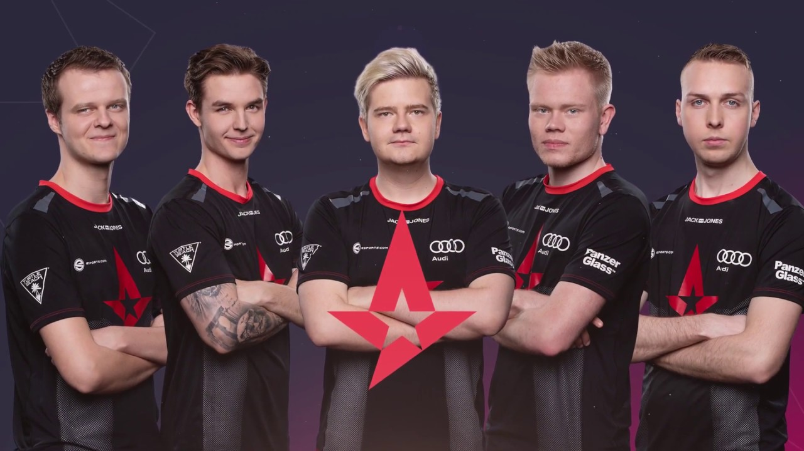

E-sport
Astralis
Astralis- duńska profesjonalna organizacja e-sportowa w grach Counter-Strike: Global Offensive, League of Legends oraz FIFA założona w styczniu 2016 przez byłych członków amerykańskiej drużyny Team SoloMid. Do pierwszego składu, wtedy jeszcze drużyny znanej jako "Team Question Mark" należeli René "cajunb" Borg, Nicolai "dev1ce" Reedtz, Peter "Dupreeh" Rasmussen, Finn "Karrigan" Andersen, Andreas "Xyp9x" Hølsleth oraz ich trener Danny "zonic" Sørensen.
